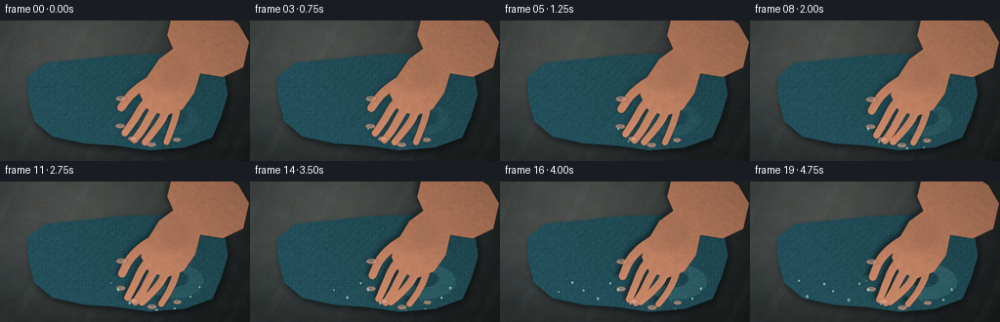
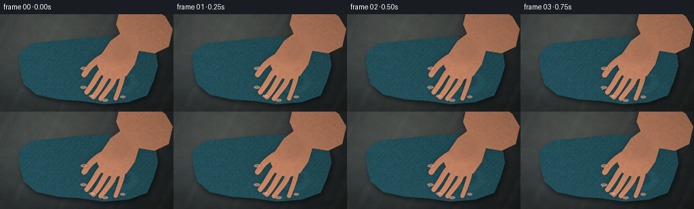

CODING AGENTS AS PIXEL WORLD MODELS
traex/DeepSeek-V4.1-Flash · mechanics_0018
点击播放 · 原生 RGB 像素
逐轮保存的候选
回放视频、检查图与代码变化。
每份候选均可单独播放。实际图片检查记录在下方工具轨迹中。
候选 01播放与检查图
点击播放 · 原生 RGB 像素

展开代码变化
--- 上一保存版本
+++ 本次保存版本
@@ -0,0 +1,619 @@
+"""Procedural PixelWorld scene: a hand progressively wringing a wet cloth."""
+
+from pathlib import Path
+import math
+
+import numpy as np
+from PIL import Image, ImageDraw, ImageFilter
+
+import artifact_io
+
+
+CASE_DIR = Path(__file__).resolve().parent
+W, H = 256, 144
+N, FPS = 20, 4.0
+S = 4
+RW, RH = W * S, H * S
+
+
+def p(value):
+ return tuple(int(round(v * S)) for v in value)
+
+
+def pts(values):
+ return [p(v) for v in values]
+
+
+def smoothstep(a, b, x):
+ t = np.clip((x - a) / (b - a), 0.0, 1.0)
+ return t * t * (3.0 - 2.0 * t)
+
+
+def bezier(p0, p1, p2, p3, n=24):
+ t = np.linspace(0.0, 1.0, n)[:, None]
+ omt = 1.0 - t
+ q = omt**3 * p0 + 3 * omt**2 * t * p1 + 3 * omt * t**2 * p2 + t**3 * p3
+ return q
+
+
+def curve_points(points, n=40, closed=False):
+ """Catmull-Rom interpolation through a compact control polygon."""
+ a = np.asarray(points, dtype=np.float32)
+ if closed:
+ ext = np.vstack([a[-1], a, a[0], a[1]])
+ count = len(a)
+ else:
+ ext = np.vstack([a[0], a, a[-1]])
+ count = len(a) - 1
+ out = []
+ for i in range(count):
+ p0, p1, p2, p3 = ext[i : i + 4]
+ t = np.linspace(0.0, 1.0, n, endpoint=(i == count - 1))[:, None]
+ out.append(
+ 0.5
+ * (
+ 2 * p1
+ + (-p0 + p2) * t
+ + (2 * p0 - 5 * p1 + 4 * p2 - p3) * t**2
+ + (-p0 + 3 * p1 - 3 * p2 + p3) * t**3
+ )
+ )
+ return np.vstack(out)
+
+
+def poly_mask(points, feather=0.0):
+ mask = Image.new("L", (RW, RH), 0)
+ ImageDraw.Draw(mask).polygon(pts(points), fill=255)
+ if feather:
+ mask = mask.filter(ImageFilter.GaussianBlur(feather * S))
+ return mask
+
+
+def noise_layer(seed, size=(128, 72), smooth=3.0):
+ rng = np.random.default_rng(seed)
+ small = rng.normal(0.0, 1.0, (size[1], size[0])).astype(np.float32)
+ image = Image.fromarray(np.uint8(np.clip(small * 42 + 128, 0, 255)), "L")
+ image = image.resize((RW, RH), Image.Resampling.BICUBIC)
+ image = image.filter(ImageFilter.GaussianBlur(smooth * S))
+ return (np.asarray(image, dtype=np.float32) - 128.0) / 42.0
+
+
+def composite(base, layer, mask):
+ return Image.composite(layer, base, mask)
+
+
+def multiply_rgb(image, factor):
+ arr = np.asarray(image, dtype=np.float32)
+ if np.isscalar(factor):
+ arr *= factor
+ else:
+ arr *= factor[:, :, None]
+ return Image.fromarray(np.uint8(np.clip(arr, 0, 255)), "RGB")
+
+
+def add_rgb(image, delta):
+ arr = np.asarray(image, dtype=np.float32)
+ if np.isscalar(delta):
+ arr += delta
+ else:
+ arr += delta[:, :, None]
+ return Image.fromarray(np.uint8(np.clip(arr, 0, 255)), "RGB")
+
+
+def draw_curve(draw, points, fill, width, n=30):
+ q = curve_points(points, n=n, closed=False)
+ draw.line([tuple(v) for v in q], fill=fill, width=max(1, int(width * S)), joint="curve")
+
+
+def radial_gradient(center, radius, strength=1.0):
+ yy, xx = np.mgrid[0:RH, 0:RW].astype(np.float32)
+ cx, cy = center[0] * S, center[1] * S
+ d = np.sqrt((xx - cx) ** 2 + (yy - cy) ** 2) / (radius * S)
+ return np.clip(1.0 - d, 0.0, 1.0) ** 2 * strength
+
+
+def make_background():
+ yy, xx = np.mgrid[0:RH, 0:RW].astype(np.float32)
+ x = xx / RW
+ y = yy / RH
+ light = np.clip(1.16 - 0.50 * x - 0.18 * y, 0.58, 1.08)
+ base = np.empty((RH, RW, 3), dtype=np.float32)
+ base[..., 0] = 58 * light
+ base[..., 1] = 66 * light
+ base[..., 2] = 68 * light
+
+ coarse = noise_layer(11, (96, 54), 4.0)
+ fine = noise_layer(12, (256, 144), 0.8)
+ base += (coarse * 6.5 + fine * 3.0)[..., None]
+
+ # Broad diagonal stone veins and a few tiny mineral flecks.
+ vein = np.sin((x * 7.0 + y * 2.1) * np.pi) * 0.5 + 0.5
+ base += ((vein > 0.965).astype(np.float32) * 4.0)[..., None]
+ rng = np.random.default_rng(13)
+ for _ in range(95):
+ sx, sy = rng.uniform(0, W), rng.uniform(0, H)
+ rx, ry = rng.uniform(0.2, 1.5), rng.uniform(0.1, 0.7)
+ cx, cy = int(sx * S), int(sy * S)
+ rr = max(1, int(rx * S))
+ sl = (slice(max(0, cy - rr), min(RH, cy + rr + 1)), slice(max(0, cx - rr), min(RW, cx + rr + 1)))
+ base[sl] += rng.uniform(-6, 7)
+
+ vignette = np.clip(1.0 - 0.30 * (((xx - RW * 0.48) / RW) ** 2 + ((yy - RH * 0.44) / RH) ** 2) * 2.2, 0.62, 1.0)
+ base *= vignette[..., None]
+ image = Image.fromarray(np.uint8(np.clip(base, 0, 255)), "RGB")
+
+ # Soft window light entering from the upper left.
+ glow = Image.new("L", (RW, RH), 0)
+ gd = ImageDraw.Draw(glow)
+ gd.ellipse(p((12, -42, 170, 112)), fill=45)
+ glow = glow.filter(ImageFilter.GaussianBlur(28 * S))
+ warm = Image.new("RGB", (RW, RH), (202, 193, 168))
+ return Image.composite(warm, image, glow.point(lambda v: int(v * 0.72)))
+
+
+def cloth_outline():
+ # An imperfect square of cloth with gently warped corners.
+ return [
+ (28, 57), (47, 43), (87, 39), (126, 35), (171, 34), (211, 40),
+ (229, 51), (233, 76), (226, 99), (217, 120), (189, 130), (153, 133),
+ (118, 128), (87, 126), (54, 119), (35, 103), (29, 81),
+ ]
+
+
+def make_cloth_static():
+ outline = cloth_outline()
+ mask = poly_mask(outline, feather=0.18)
+ shadow_mask = Image.new("L", (RW, RH), 0)
+ sd = ImageDraw.Draw(shadow_mask)
+ sd.polygon(pts([(x + 2.0, y + 3.4) for x, y in outline]), fill=210)
+ shadow_mask = shadow_mask.filter(ImageFilter.GaussianBlur(3.2 * S))
+
+ yy, xx = np.mgrid[0:RH, 0:RW].astype(np.float32)
+ x = xx / RW
+ y = yy / RH
+ weave = (
+ np.sin(xx * 0.50) * 1.7
+ + np.sin(yy * 0.57) * 1.5
+ + np.sin((xx + yy) * 0.19) * 1.2
+ )
+ weave += noise_layer(21, (256, 144), 0.5) * 4.0
+ light = np.clip(1.08 - 0.20 * x + 0.09 * y, 0.70, 1.08)
+ cloth = np.empty((RH, RW, 3), dtype=np.float32)
+ cloth[..., 0] = 31 * light + weave
+ cloth[..., 1] = 73 * light + weave * 1.15
+ cloth[..., 2] = 84 * light + weave * 1.25
+ cloth_img = Image.fromarray(np.uint8(np.clip(cloth, 0, 255)), "RGB")
+
+ # Woven micro-texture, clipped to the cloth.
+ texture = Image.new("RGBA", (RW, RH), (0, 0, 0, 0))
+ td = ImageDraw.Draw(texture)
+ for i in range(-18, 230, 5):
+ td.line([(i * S, 24 * S), ((i + 140) * S, 142 * S)], fill=(130, 184, 187, 8), width=max(1, S // 2))
+ td.line([((i + 3) * S, 24 * S), ((i + 143) * S, 142 * S)], fill=(6, 31, 38, 11), width=max(1, S // 2))
+ texture = texture.filter(ImageFilter.GaussianBlur(0.35 * S))
+ cloth_img = Image.alpha_composite(cloth_img.convert("RGBA"), Image.composite(
+ texture, Image.new("RGBA", (RW, RH), (0, 0, 0, 0)), mask
+ )).convert("RGB")
+
+ # Large structural folds. Each has a dark trough and a displaced light crest.
+ folds = Image.new("RGBA", (RW, RH), (0, 0, 0, 0))
+ fd = ImageDraw.Draw(folds)
+ fold_specs = [
+ ([(36, 89), (74, 78), (116, 76), (154, 80), (201, 70)], 7.0, 34, 62),
+ ([(44, 111), (82, 101), (122, 98), (162, 99), (218, 92)], 5.5, 42, 78),
+ ([(61, 45), (80, 65), (99, 91), (121, 124)], 4.7, 26, 58),
+ ([(132, 37), (137, 61), (147, 87), (161, 128)], 5.8, 30, 68),
+ ([(190, 42), (183, 66), (175, 92), (174, 126)], 4.3, 26, 56),
+ ([(31, 72), (55, 70), (80, 73), (100, 78)], 3.6, 20, 48),
+ ]
+ for points, width, dark, light in fold_specs:
+ draw_curve(fd, [(x + 1.0, y + 2.1) for x, y in points], (4, 18, 24, dark), width)
+ draw_curve(fd, [(x - 0.8, y - 1.5) for x, y in points], (150, 213, 215, light), max(1.0, width * 0.38))
+ folds = folds.filter(ImageFilter.GaussianBlur(1.05 * S))
+ cloth_img = Image.alpha_composite(cloth_img.convert("RGBA"), Image.composite(
+ folds, Image.new("RGBA", (RW, RH), (0, 0, 0, 0)), mask
+ )).convert("RGB")
+
+ # Wet sheen follows the raised folds.
+ sheen = Image.new("RGBA", (RW, RH), (0, 0, 0, 0))
+ shd = ImageDraw.Draw(sheen)
+ sheen_specs = [
+ ([(49, 82), (87, 72), (129, 71), (174, 75)], 2.2, 72),
+ ([(57, 104), (96, 95), (140, 93), (198, 86)], 1.7, 58),
+ ([(133, 43), (139, 66), (151, 92), (157, 116)], 1.5, 48),
+ ([(192, 50), (185, 72), (180, 96)], 1.2, 42),
+ ]
+ for points, width, alpha in sheen_specs:
+ draw_curve(shd, [(x - 0.6, y - 0.7) for x, y in points], (201, 249, 245, alpha), width)
+ sheen = sheen.filter(ImageFilter.GaussianBlur(0.8 * S))
+ cloth_img = Image.alpha_composite(cloth_img.convert("RGBA"), Image.composite(
+ sheen, Image.new("RGBA", (RW, RH), (0, 0, 0, 0)), mask
+ )).convert("RGB")
+
+ # Rim light on the two cloth edges nearest the window.
+ rim = Image.new("RGBA", (RW, RH), (0, 0, 0, 0))
+ rd = ImageDraw.Draw(rim)
+ draw_curve(rd, [(29, 57), (47, 43), (87, 39), (126, 35), (171, 34), (211, 40)], (178, 222, 218, 54), 1.2)
+ draw_curve(rd, [(29, 57), (29, 81), (35, 103), (54, 119), (87, 126)], (125, 183, 183, 34), 1.0)
+ rim = rim.filter(ImageFilter.GaussianBlur(0.5 * S))
+ cloth_img = Image.alpha_composite(cloth_img.convert("RGBA"), Image.composite(
+ rim, Image.new("RGBA", (RW, RH), (0, 0, 0, 0)), mask
+ )).convert("RGB")
+
+ return cloth_img, mask, shadow_mask
+
+
+def finger_centerline(kind, spread, press, sx=0.0, sy=0.0):
+ """Return four control points for a finger, in final-frame coordinates."""
+ spread *= S
+ base = {
+ "index": [(154, 79), (145, 88), (135, 99), (123, 108)],
+ "middle": [(163, 83), (154, 97), (145, 111), (136, 121)],
+ "ring": [(173, 84), (167, 101), (160, 115), (155, 127)],
+ "pinky": [(183, 80), (181, 96), (180, 110), (181, 122)],
+ "thumb": [(156, 61), (146, 66), (135, 72), (124, 80)],
+ }[kind]
+ pivot = np.array([166.0, 84.0], dtype=np.float32)
+ arr = []
+ for i, (x, y) in enumerate(base):
+ v = np.array([x, y], dtype=np.float32) - pivot
+ # Fingers fan outward slightly as the palm settles onto the cloth.
+ angle = {"index": -0.08, "middle": -0.02, "ring": 0.07, "pinky": 0.12, "thumb": -0.10}[kind]
+ a = angle * spread * (i / 3.0)
+ ca, sa = math.cos(a), math.sin(a)
+ v = np.array([ca * v[0] - sa * v[1], sa * v[0] + ca * v[1]], dtype=np.float32)
+ q = pivot + v
+ q[0] += sx
+ q[1] += sy + press * (i / 3.0)
+ arr.append(tuple(q))
+ return arr
+
+
+def tapered_curve(draw, points, widths, fill):
+ q = curve_points(points, n=26, closed=False)
+ # Piecewise circles give a clean tapered capsule silhouette.
+ for i, (x, y) in enumerate(q):
+ t = i / max(1, len(q) - 1)
+ if isinstance(widths, (tuple, list)):
+ w = widths[0] * (1 - t) + widths[1] * t
+ else:
+ w = widths
+ r = w * S * 0.5
+ draw.ellipse((x * S - r, y * S - r, x * S + r, y * S + r), fill=fill)
+
+
+def make_hand_mask(press, spread):
+ mask = Image.new("L", (RW, RH), 0)
+ d = ImageDraw.Draw(mask)
+ dy = 1.4 * press
+
+ # Forearm enters through the top-right corner.
+ forearm = [
+ (177, -10), (220, -12), (244, 3), (255, 22), (249, 48),
+ (228, 58), (203, 54), (181, 38), (171, 15),
+ ]
+ d.polygon(pts([(x, y + dy * 0.35) for x, y in forearm]), fill=255)
+
+ # Back of the hand and palm, flattened slightly by pressure.
+ palm = [
+ (178, 28), (197, 38), (205, 54), (199, 74), (187, 91),
+ (169, 98), (151, 91), (143, 76), (150, 58), (163, 39),
+ ]
+ palm = [(x + (1.8 if y > 55 else 0.0) * press, y + dy) for x, y in palm]
+ d.polygon(pts(palm), fill=255)
+
+ finger_widths = {
+ "index": (9.0, 7.2),
+ "middle": (9.2, 7.4),
+ "ring": (8.7, 7.0),
+ "pinky": (7.7, 6.3),
+ "thumb": (10.6, 8.2),
+ }
+ for kind in ("thumb", "index", "middle", "ring", "pinky"):
+ points = finger_centerline(kind, spread, press)
+ tapered_curve(d, points, finger_widths[kind], 255)
+
+ mask = mask.filter(ImageFilter.GaussianBlur(0.28 * S))
+ return mask
+
+
+def make_hand_texture():
+ yy, xx = np.mgrid[0:RH, 0:RW].astype(np.float32)
+ x = xx / RW
+ y = yy / RH
+ light = np.clip(1.10 - 0.34 * x + 0.19 * y, 0.62, 1.13)
+ skin = np.empty((RH, RW, 3), dtype=np.float32)
+ skin[..., 0] = 183 * light
+ skin[..., 1] = 125 * light
+ skin[..., 2] = 97 * light
+ skin += noise_layer(31, (150, 84), 0.9)[..., None] * np.array([4.8, 3.0, 2.0], dtype=np.float32)
+ image = Image.fromarray(np.uint8(np.clip(skin, 0, 255)), "RGB")
+
+ # Subsurface warmth through the thinner fingertips.
+ warm = Image.new("L", (RW, RH), 0)
+ wd = ImageDraw.Draw(warm)
+ wd.ellipse(p((116, 72, 202, 138)), fill=48)
+ warm = warm.filter(ImageFilter.GaussianBlur(8 * S))
+ image = Image.composite(Image.new("RGB", (RW, RH), (221, 151, 118)), image, warm)
+ return image
+
+
+def hand_details(mask, press, spread):
+ """Return an RGBA detail layer for creases, nails and edge shading."""
+ detail = Image.new("RGBA", (RW, RH), (0, 0, 0, 0))
+ d = ImageDraw.Draw(detail)
+ dy = 1.4 * press
+
+ # Knuckle creases.
+ creases = [
+ [(151, 77), (157, 80), (163, 79)],
+ [(160, 82), (167, 85), (173, 84)],
+ [(170, 84), (177, 87), (184, 85)],
+ [(178, 80), (184, 82), (190, 80)],
+ ]
+ for i, c in enumerate(creases):
+ draw_curve(d, [(x, y + dy + 0.7 * press) for x, y in c], (86, 45, 35, 82), 0.8)
+
+ # Interphalangeal creases.
+ finger_creases = {
+ "index": [[(140, 92), (145, 91), (150, 89)], [(128, 102), (133, 100), (138, 99)]],
+ "middle": [[(150, 102), (155, 101), (160, 98)], [(140, 114), (145, 112), (150, 109)]],
+ "ring": [[(163, 105), (168, 103), (172, 100)], [(157, 118), (161, 116), (165, 113)]],
+ "pinky": [[(179, 99), (183, 97), (187, 94)], [(179, 112), (182, 110), (185, 107)]],
+ "thumb": [[(142, 68), (146, 66), (150, 64)]],
+ }
+ for kind, groups in finger_creases.items():
+ pts0 = finger_centerline(kind, spread, press)
+ angle = math.atan2(pts0[-1][1] - pts0[0][1], pts0[-1][0] - pts0[0][0])
+ nx, ny = -math.sin(angle), math.cos(angle)
+ for group in groups:
+ for j, (x, y) in enumerate(group):
+ shift = (j - 1) * 0.55
+ d.line(
+ [(x - nx * 2.0, y - ny * 2.0), (x + nx * 2.0, y + ny * 2.0)],
+ fill=(95, 51, 40, 68),
+ width=max(1, S),
+ )
+
+ # Pale, slightly glossy fingernails at the tips.
+ tips = {
+ "index": (123, 108, -0.66, 5.1, 2.5),
+ "middle": (136, 121, -0.76, 5.2, 2.6),
+ "ring": (155, 127, -0.88, 4.9, 2.5),
+ "pinky": (181, 122, -1.45, 4.2, 2.3),
+ "thumb": (124, 80, -2.35, 5.8, 2.8),
+ }
+ nails = Image.new("RGBA", (RW, RH), (0, 0, 0, 0))
+ nd = ImageDraw.Draw(nails)
+ for kind, (x, y, angle, rx, ry) in tips.items():
+ x += 0.8 * press
+ y += dy + press * 0.8
+ bbox = p((x - rx, y - ry, x + rx, y + ry))
+ nd.ellipse(bbox, fill=(210, 151, 129, 185))
+ # Rotated highlight, approximated by a short offset ellipse.
+ ox, oy = math.cos(angle) * 0.8, math.sin(angle) * 0.8
+ nd.ellipse(p((x - rx * 0.48 + ox, y - ry * 0.45 + oy, x + rx * 0.34 + ox, y + ry * 0.28 + oy)),
+ fill=(241, 197, 174, 88))
+ nails = nails.filter(ImageFilter.GaussianBlur(0.35 * S))
+ detail = Image.alpha_composite(detail, nails)
+
+ # Shadow along the underside of each finger and the right side of the hand.
+ shade = Image.new("L", (RW, RH), 0)
+ sd = ImageDraw.Draw(shade)
+ for kind in ("index", "middle", "ring", "pinky", "thumb"):
+ q = curve_points(finger_centerline(kind, spread, press), n=24)
+ for i in range(len(q) - 1):
+ x0, y0 = q[i]
+ x1, y1 = q[i + 1]
+ dx, dyv = x1 - x0, y1 - y0
+ length = max(0.001, math.hypot(dx, dyv))
+ nx, ny = -dyv / length, dx / length
+ off = 2.0
+ sd.line(
+ [((x0 + nx * off) * S, (y0 + ny * off) * S), ((x1 + nx * off) * S, (y1 + ny * off) * S)],
+ fill=78,
+ width=max(1, int(1.5 * S)),
+ )
+ shade = shade.filter(ImageFilter.GaussianBlur(2.3 * S))
+ shade = Image.composite(shade, Image.new("L", (RW, RH), 0), mask)
+ detail = Image.composite(Image.new("RGBA", (RW, RH), (55, 28, 25, 120)), detail, shade)
+
+ # Gentle highlight on the back of the hand.
+ hi = Image.new("L", (RW, RH), 0)
+ hd = ImageDraw.Draw(hi)
+ hd.ellipse(p((157, 38, 191, 71)), fill=78)
+ hd.ellipse(p((153, 45, 175, 73)), fill=42)
+ hi = hi.filter(ImageFilter.GaussianBlur(4.4 * S))
+ hi = Image.composite(hi, Image.new("L", (RW, RH), 0), mask)
+ detail = Image.composite(Image.new("RGBA", (RW, RH), (244, 203, 172, 84)), detail, hi)
+ return detail
+
+
+def water_layer(frame):
+ """Transparent highlights, beads and runoff. Amount increases with pressure."""
+ t = frame / (N - 1)
+ ease = smoothstep(0.0, 1.0, t)
+ water = Image.new("RGBA", (RW, RH), (0, 0, 0, 0))
+ d = ImageDraw.Draw(water)
+
+ # A translucent pool forms under the palm and spreads outward.
+ pool_alpha = int(18 + 38 * ease)
+ d.ellipse(p((151 - 4 * ease, 85 - 1 * ease, 203 + 9 * ease, 117 + 4 * ease)),
+ fill=(87, 156, 164, pool_alpha))
+ d.ellipse(p((163, 92, 193, 108)), fill=(10, 31, 37, int(20 + 30 * ease)))
+
+ # Thin rivulets leaving the compressed cloth.
+ rivulets = [
+ ([(168, 100), (166, 113), (159, 126), (156, 138)], 1.0 + 0.9 * ease, int(26 + 50 * ease)),
+ ([(184, 99), (188, 112), (185, 124), (183, 134)], 0.8 + 0.8 * ease, int(20 + 46 * ease)),
+ ([(147, 106), (142, 117), (138, 127), (134, 136)], 0.7 + 0.7 * ease, int(12 + 38 * ease)),
+ ]
+ for points, width, alpha in rivulets:
+ draw_curve(d, points, (160, 224, 224, alpha), width)
+ draw_curve(d, [(x - 0.45, y - 0.45) for x, y in points], (232, 255, 249, min(120, alpha + 24)), max(0.55, width * 0.34))
+
+ # Water beads appear around the fingers and cloth folds.
+ beads = [
+ (121, 111, 1.6, 0.10, 0.0, 0.0),
+ (131, 124, 1.4, 0.16, 0.6, 0.2),
+ (143, 115, 1.5, 0.24, 0.0, 0.4),
+ (161, 130, 1.8, 0.30, -0.3, 0.8),
+ (178, 130, 1.5, 0.38, 0.5, 0.3),
+ (194, 117, 1.4, 0.45, 0.8, 0.6),
+ (204, 108, 1.8, 0.52, 0.5, 0.4),
+ (114, 104, 1.3, 0.57, -0.4, 0.1),
+ (99, 118, 1.7, 0.64, 0.4, 0.5),
+ (86, 111, 1.3, 0.70, -0.2, 0.2),
+ (73, 103, 1.5, 0.77, 0.6, 0.3),
+ (60, 113, 1.7, 0.84, -0.3, 0.7),
+ (49, 101, 1.2, 0.90, 0.2, 0.1),
+ ]
+ for bx, by, br, appear, vx, vy in beads:
+ if t < appear:
+ continue
+ age = (t - appear) / max(0.001, 1.0 - appear)
+ x = bx + vx * age * 5.0
+ y = by + vy * age * 7.0
+ grow = 0.55 + 0.45 * smoothstep(0.0, 0.35, age)
+ rx, ry = br * grow, br * 1.22 * grow
+ d.ellipse(p((x - rx - 0.6, y - ry - 0.5, x + rx + 0.6, y + ry + 0.8)), fill=(5, 25, 30, 80))
+ d.ellipse(p((x - rx, y - ry, x + rx, y + ry)), fill=(131, 205, 208, 102))
+ d.ellipse(p((x - rx * 0.42, y - ry * 0.48, x + rx * 0.32, y + ry * 0.12)), fill=(241, 255, 250, 178))
+
+ # A drip gathers at the lowest cloth corner late in the shot.
+ if t >= 0.48:
+ drip_t = (t - 0.48) / 0.52
+ dx = 157.0 + 0.8 * math.sin(drip_t * math.pi)
+ dy = 133.0 + 5.0 * drip_t + 8.0 * drip_t**2
+ d.line(p((157, 132, dx, dy)), fill=(176, 231, 228, int(85 * drip_t)), width=max(1, int(0.8 * S)))
+ d.ellipse(p((dx - 1.4, dy - 2.0, dx + 1.4, dy + 2.0)), fill=(115, 188, 193, int(150 * drip_t)))
+ d.ellipse(p((dx - 0.55, dy - 1.0, dx + 0.35, dy - 0.05)), fill=(245, 255, 250, int(190 * drip_t)))
+ d.ellipse(p((153 + 3 * drip_t, 141, 162 + 7 * drip_t, 144)), fill=(84, 132, 135, int(55 * drip_t)))
+
+ # Fine spray only after the strongest compression.
+ if t > 0.72:
+ rng = np.random.default_rng(77)
+ count = int(4 + 8 * (t - 0.72) / 0.28)
+ for _ in range(count):
+ sx = rng.uniform(112, 192)
+ sy = rng.uniform(101, 128)
+ rr = rng.uniform(0.25, 0.7)
+ d.ellipse(p((sx - rr, sy - rr, sx + rr, sy + rr)), fill=(213, 250, 246, 95))
+ return water
+
+
+def pressure_creases(frame):
+ t = frame / (N - 1)
+ ease = smoothstep(0.0, 1.0, t)
+ layer = Image.new("RGBA", (RW, RH), (0, 0, 0, 0))
+ d = ImageDraw.Draw(layer)
+ crease_specs = [
+ ([(164, 98), (159, 108), (153, 118), (146, 128)], 56),
+ ([(174, 101), (175, 112), (174, 124), (171, 133)], 62),
+ ([(186, 98), (190, 109), (192, 121), (194, 131)], 58),
+ ([(153, 91), (143, 99), (132, 106), (120, 112)], 42),
+ ([(195, 86), (205, 92), (214, 101), (222, 110)], 45),
+ ([(166, 96), (157, 88), (147, 80), (137, 74)], 30),
+ ]
+ for points, alpha in crease_specs:
+ q = [(x, y + 0.7 * ease) for x, y in points]
+ draw_curve(d, q, (4, 24, 29, int(alpha * (0.25 + 0.75 * ease))), 0.8 + 0.7 * ease)
+ draw_curve(d, [(x - 0.7, y - 0.6) for x, y in q], (117, 186, 187, int(alpha * 0.55 * ease)), 0.45 + 0.35 * ease)
+ return layer.filter(ImageFilter.GaussianBlur(0.55 * S))
+
+
+def render_frame(background, cloth, cloth_mask, cloth_shadow, hand_tex, frame):
+ t = frame / (N - 1)
+ press = smoothstep(0.0, 1.0, t)
+ spread = 0.55 + 0.45 * press
+
+ base = background.copy()
+ shadow_rgb = Image.new("RGB", (RW, RH), (4, 9, 11))
+ base = Image.composite(shadow_rgb, base, cloth_shadow.point(lambda v: int(v * 0.78)))
+
+ # The cloth widens a touch as it flattens beneath the hand.
+ grow = 0.65 * press
+ cloth_frame = cloth
+ if grow > 0.01:
+ scaled = cloth.resize((int(RW * (1.0 + grow / W)), int(RH * (1.0 + grow / H))), Image.Resampling.LANCZOS)
+ cloth_frame = Image.new("RGB", (RW, RH), (0, 0, 0))
+ cloth_frame.paste(scaled, (int(-grow * S * 0.45), int(-grow * S * 0.35)))
+ shifted_mask = Image.new("L", (RW, RH), 0)
+ scaled_mask = cloth_mask.resize(scaled.size, Image.Resampling.BILINEAR)
+ shifted_mask.paste(scaled_mask, (int(-grow * S * 0.45), int(-grow * S * 0.35)))
+ cloth_frame = Image.composite(cloth_frame, base, shifted_mask)
+ base = cloth_frame
+ else:
+ base = Image.composite(cloth_frame, base, cloth_mask)
+
+ base = Image.alpha_composite(base.convert("RGBA"), pressure_creases(frame)).convert("RGB")
+
+ hand_mask = make_hand_mask(press, spread)
+ # Contact shadow becomes darker and tighter as pressure rises.
+ contact = hand_mask.transform(
+ (RW, RH),
+ Image.Transform.AFFINE,
+ (1, 0, 1.8 * S * (0.4 + press), 0, 1, 2.5 * S * (0.35 + 0.85 * press)),
+ resample=Image.Resampling.BICUBIC,
+ ).filter(ImageFilter.GaussianBlur((3.1 - 0.9 * press) * S))
+ base = Image.composite(
+ Image.new("RGB", (RW, RH), (5, 13, 15)),
+ base,
+ contact.point(lambda v: int(v * (0.30 + 0.28 * press))),
+ )
+
+ # The back of the hand gets a subtle upper-left rim.
+ rim_mask = Image.new("L", (RW, RH), 0)
+ rd = ImageDraw.Draw(rim_mask)
+ rd.line(pts([(163, 39), (150, 58), (143, 76), (151, 91)]), fill=86, width=max(1, int(0.9 * S)))
+ rd.line(pts([(178, 28), (163, 39)]), fill=70, width=max(1, int(1.2 * S)))
+ rim_mask = rim_mask.filter(ImageFilter.GaussianBlur(1.5 * S))
+ rim_mask = Image.composite(rim_mask, Image.new("L", (RW, RH), 0), hand_mask)
+ base = Image.composite(Image.new("RGB", (RW, RH), (249, 213, 179)), base, rim_mask.point(lambda v: int(v * 0.42)))
+
+ hand = Image.composite(hand_tex, Image.new("RGB", (RW, RH), (0, 0, 0)), hand_mask)
+ base = Image.composite(hand, base, hand_mask)
+ base = Image.alpha_composite(base.convert("RGBA"), hand_details(hand_mask, press, spread)).convert("RGB")
+
+ # Water lies over the cloth but under the hand.
+ water = water_layer(frame)
+ water = Image.composite(water, Image.new("RGBA", (RW, RH), (0, 0, 0, 0)),
+ Image.composite(cloth_mask, Image.new("L", (RW, RH), 0), Image.eval(hand_mask, lambda v: 255 - v)))
+ base = Image.alpha_composite(base.convert("RGBA"), water).convert("RGB")
+
+ # Gentle bloom around the brightest wet glints.
+ arr = np.asarray(base, dtype=np.float32)
+ lum = arr.max(axis=2)
+ bright = np.clip((lum - 214.0) / 41.0, 0.0, 1.0)
+ bloom = Image.fromarray(np.uint8(bright * 255), "L").filter(ImageFilter.GaussianBlur(2.4 * S))
+ warm = Image.new("RGB", (RW, RH), (223, 248, 242))
+ base = Image.composite(warm, base, bloom.point(lambda v: int(v * 0.24)))
+
+ # Final warm/cool grade and light film grain.
+ arr = np.asarray(base, dtype=np.float32) / 255.0
+ arr[..., 0] = np.clip(arr[..., 0] * 1.025 + 0.003, 0, 1)
+ arr[..., 1] = np.clip(arr[..., 1] * 1.010 + 0.002, 0, 1)
+ arr[..., 2] = np.clip(arr[..., 2] * 0.995, 0, 1)
+ rng = np.random.default_rng(1000 + frame)
+ grain = rng.normal(0.0, 0.0075, (RH, RW, 1)).astype(np.float32)
+ arr = np.clip(arr + grain, 0, 1)
+ image = Image.fromarray(np.uint8(arr * 255.0), "RGB")
+ return image.resize((W, H), Image.Resampling.LANCZOS)
+
+
+def main():
+ background = make_background()
+ cloth, cloth_mask, cloth_shadow = make_cloth_static()
+ hand_tex = make_hand_texture()
+ frames = []
+ for frame in range(N):
+ image = render_frame(background, cloth, cloth_mask, cloth_shadow, hand_tex, frame)
+ frames.append(np.asarray(image, dtype=np.uint8))
+ image.save(CASE_DIR / f"preview_{frame:02d}.png")
+ frames = np.stack(frames, axis=0)
+ artifact_io.save(frames, CASE_DIR)
+ print(f"saved {frames.shape} RGB video at {FPS} fps")
+
+
+if __name__ == "__main__":
+ main()
候选 02播放与检查图
点击播放 · 原生 RGB 像素


展开代码变化
--- 上一保存版本
+++ 本次保存版本
@@ -531,20 +531,30 @@
shadow_rgb = Image.new("RGB", (RW, RH), (4, 9, 11))
base = Image.composite(shadow_rgb, base, cloth_shadow.point(lambda v: int(v * 0.78)))
- # The cloth widens a touch as it flattens beneath the hand.
- grow = 0.65 * press
- cloth_frame = cloth
- if grow > 0.01:
- scaled = cloth.resize((int(RW * (1.0 + grow / W)), int(RH * (1.0 + grow / H))), Image.Resampling.LANCZOS)
- cloth_frame = Image.new("RGB", (RW, RH), (0, 0, 0))
- cloth_frame.paste(scaled, (int(-grow * S * 0.45), int(-grow * S * 0.35)))
- shifted_mask = Image.new("L", (RW, RH), 0)
- scaled_mask = cloth_mask.resize(scaled.size, Image.Resampling.BILINEAR)
- shifted_mask.paste(scaled_mask, (int(-grow * S * 0.45), int(-grow * S * 0.35)))
- cloth_frame = Image.composite(cloth_frame, base, shifted_mask)
- base = cloth_frame
- else:
- base = Image.composite(cloth_frame, base, cloth_mask)
+ # The cloth flattens under the palm: a local field stretches the weave
+ # sideways and pulls its upper folds toward the contact point.
+ yy, xx = np.mgrid[0:RH, 0:RW].astype(np.float32)
+ dx = xx / S - 170.0
+ dy = yy / S - 92.0
+ influence = np.exp(-(dx * dx / (47.0**2) + dy * dy / (37.0**2))) * press
+ map_x = xx + influence * (-8.0 + 2.2 * dy)
+ map_y = yy + influence * (7.0 + 0.8 * dx)
+ cloth_frame = cloth.transform(
+ (RW, RH), Image.Transform.MESH,
+ # Pillow MESH accepts a rectangular mesh of quad coordinates.
+ [(0, 0, 0, 0, RW, 0, RW, 0, RW, RH, RW, RH, 0, RH, 0, RH),
+ (0, 0, 0, 0, RW, 0, RW, 0, RW, RH, RW, RH, 0, RH, 0, RH)],
+ resample=Image.Resampling.BICUBIC,
+ ) if False else cloth
+ # A smooth per-pixel warp is cheaper and more controllable than a mesh.
+ src = np.asarray(cloth, dtype=np.uint8)
+ xi = np.clip(np.rint(map_x).astype(np.int32), 0, RW - 1)
+ yi = np.clip(np.rint(map_y).astype(np.int32), 0, RH - 1)
+ warped = src[yi, xi]
+ cloth_frame = Image.fromarray(warped)
+ warped_mask = np.asarray(cloth_mask, dtype=np.uint8)[yi, xi]
+ warped_mask = Image.fromarray(warped_mask)
+ base = Image.composite(cloth_frame, base, warped_mask)
base = Image.alpha_composite(base.convert("RGBA"), pressure_creases(frame)).convert("RGB")
候选 03播放与检查图
候选 04播放与检查图
点击播放 · 原生 RGB 像素

展开代码变化
--- 上一保存版本
+++ 本次保存版本
@@ -539,14 +539,7 @@
influence = np.exp(-(dx * dx / (47.0**2) + dy * dy / (37.0**2))) * press
map_x = xx + influence * (-8.0 + 2.2 * dy)
map_y = yy + influence * (7.0 + 0.8 * dx)
- cloth_frame = cloth.transform(
- (RW, RH), Image.Transform.MESH,
- # Pillow MESH accepts a rectangular mesh of quad coordinates.
- [(0, 0, 0, 0, RW, 0, RW, 0, RW, RH, RW, RH, 0, RH, 0, RH),
- (0, 0, 0, 0, RW, 0, RW, 0, RW, RH, RW, RH, 0, RH, 0, RH)],
- resample=Image.Resampling.BICUBIC,
- ) if False else cloth
- # A smooth per-pixel warp is cheaper and more controllable than a mesh.
+ # A smooth per-pixel warp keeps the cloth's weave intact.
src = np.asarray(cloth, dtype=np.uint8)
xi = np.clip(np.rint(map_x).astype(np.int32), 0, RW - 1)
yi = np.clip(np.rint(map_y).astype(np.int32), 0, RH - 1)
可观测工具轨迹
实际执行的命令与返回图片。
命令 1exit 0
/bin/bash -c "pwd && rg --files -g 'prompt.txt' -g 'GENERATION_RULES.md' -g 'task_spec.json' -g '"'!node_modules'"'"
命令 2exit 0
/bin/bash -c 'git status --short && find . -maxdepth 2 -type f | sort | head -100'
命令 3exit 0
/bin/bash -c 'cat prompt.txt'
命令 4exit 0
/bin/bash -c 'cat GENERATION_RULES.md'
命令 5exit 0
/bin/bash -c 'cat task_spec.json'
命令 6exit 0
/bin/bash -c "sed -n '1,240p' artifact_io.py"
命令 7exit 0
/bin/bash -c "sed -n '1,260p' player_template.html"
命令 8exit 0
/bin/bash -c 'python generate.py'
命令 9exit 0
/bin/bash -c 'which chafa || which viu || which img2txt || which jp2 || true'
命令 10exit 0
/bin/bash -c "python - <<'PY'
from PIL import Image
import numpy as np
for i in [0,5,10,15,19]:
a=np.asarray(Image.open(f'frames/{i:02d}.png'))
print(i, 'mean', a.mean((0,1)).round(1), 'std', a.std().round(1), 'range', a.min(), a.max())
PY"命令 11exit 0
/bin/bash -c 'ls -lh frames/00.png inspection.png index.html pixels.npz && du -h index.html'
命令 12exit 0
/bin/bash -c "python - <<'PY'
import generate, numpy as np
from PIL import Image
for f in (0,10,19):
p=0 if f==0 else (1 if f==19 else 0.5)
m=np.asarray(generate.make_hand_mask(p,0.55+0.45*p).resize((64,36),Image.Resampling.BILINEAR))
chars=' .:-=+*#%@'
print('\\nFRAME',f)
for row in m:
print(''.join(chars[min(9,int(v/25.6))] for v in row))
PY"命令 13exit 0
/bin/bash -c "python - <<'PY'
from PIL import Image
import numpy as np
for f in (0,5,10,15,19):
a=np.asarray(Image.open(f'frames/{f:02d}.png').convert('L'),dtype=np.float32)
gx=np.abs(np.diff(a,axis=1)).mean(); gy=np.abs(np.diff(a,axis=0)).mean()
print(f,'edge x/y',round(float(gx),2),round(float(gy),2),'percentiles',np.percentile(a,[1,10,50,90,99]).astype(int))
PY"命令 14exit 0
/bin/bash -c "python - <<'PY'
try:
import scipy; print('scipy',scipy.__version__)
except Exception as e: print('no scipy',e)
PY"命令 15exit 0
/bin/bash -c 'mkdir -p candidate_01 && cp -r frames candidate_01/ && cp inspection.png transition_check.png pixels.npz index.html candidate_01/'
命令 16exit 0
/bin/bash -c 'python generate.py'
命令 17exit 0
/bin/bash -c "python - <<'PY'
from PIL import Image
import numpy as np
f0=np.asarray(Image.open('frames/00.png'),dtype=np.int16)
for f in [1,4,9,14,19]:
a=np.asarray(Image.open(f'frames/{f:02d}.png'),dtype=np.int16)
d=np.abs(a-f0)
print(f, 'changed>3', round(float((d.max(2)>3).mean()),3), 'MAE',round(float(d.mean()),2),'P95',int(np.percentile(d,95)))
# compare candidate 1 to candidate 2
for f in [0,9,19]:
a=np.asarray(Image.open(f'candidate_01/frames/{f:02d}.png'),dtype=np.int16)
b=np.asarray(Image.open(f'frames/{f:02d}.png'),dtype=np.int16)
d=np.abs(a-b)
print('c1-c2',f,'MAE',round(float(d.mean()),2),'changed>3',round(float((d.max(2)>3).mean()),3))
PY"命令 18exit 0
/bin/bash -c "python - <<'PY'
from PIL import Image
import numpy as np, generate
for f in [0,9,19]:
a=np.asarray(Image.open(f'frames/{f:02d}.png')).astype(float)
p=0 if f==0 else (1 if f==19 else .5)
m=np.asarray(generate.make_hand_mask(p,.55+.45*p).resize((256,144),Image.Resampling.BILINEAR))/255
cloth=((np.indices((144,256))[0]>40)&(np.indices((144,256))[0]<133)) & (m<.1)
hand=m>.8
bg=~((np.indices((144,256))[0]>32)&(np.indices((144,256))[0]<136))
print('f',f,'hand',a[hand].mean(0).round(1),'cloth',a[cloth].mean(0).round(1),'bg',a[bg].mean(0).round(1))
PY"命令 19exit 0
/bin/bash -c "python - <<'PY'
import json, numpy as np
from pathlib import Path
from PIL import Image
spec=json.loads(Path('task_spec.json').read_text())
z=np.load('pixels.npz')['pixels']
print('npz',z.shape,z.dtype,'range',z.min(),z.max())
print('pngs',len(list(Path('frames').glob('*.png'))),'inspection',Image.open('inspection.png').size)
html=Path('index.html').read_text()
print('html bytes',len(html.encode()),'ready', '__pixelReady' in html,'data placeholder', '__DATA__' in html)
print('spec',spec)
PY"命令 20exit 0
/bin/bash -c "find . -maxdepth 2 -type f | sort | sed -n '1,100p'"
命令 21exit 1
/bin/bash -c "python - <<'PY'
from pathlib import Path
import shutil
for p in Path('.').glob('preview_*.png'):
p.unlink()
shutil.rmtree('candidate_01', ignore_errors=True)
shutil.rmtree('__pycache__', ignore_errors=True)
PY
python generate.py > /tmp/pixelworld_generate.log 2>&1
tail -n 1 /tmp/pixelworld_generate.log"命令 22exit 0
/bin/bash -c 'python generate.py'
命令 23exit 0
/bin/bash -c "python - <<'PY'
from pathlib import Path
from PIL import Image
import numpy as np, json
z=np.load('pixels.npz')['pixels']
assert z.shape==(144,256,20) and z.dtype==np.uint32
assert len(list(Path('frames').glob('*.png')))==20
assert all(Image.open(p).size==(256,144) for p in Path('frames').glob('*.png'))
assert Path('index.html').is_file() and Path('inspection.png').is_file()
print('validated', z.shape, 'frames; player', Path('index.html').stat().st_size, 'bytes')
PY"命令 24exit 0
/bin/bash -c "python - <<'PY'
from pathlib import Path
for p in Path('.').glob('preview_*.png'):
p.unlink()
PY
ls -lh index.html pixels.npz inspection.png generate.py"命令 25exit 0
/bin/bash -c 'git status --short -- . && find . -maxdepth 2 -type f | sort | tail -35'
命令 26exit 0
/bin/bash -c "python - <<'PY'
import shutil
shutil.rmtree('__pycache__', ignore_errors=True)
PY
python - <<'PY'
from pathlib import Path
import numpy as np
from PIL import Image
z=np.load('pixels.npz')['pixels']
packed=(z[...,0]<<16)|(z[...,1]<<8)|z[...,2]
for f in (0,19):
png=np.asarray(Image.open(f'frames/{f:02d}.png')).astype(np.uint32)
pngpack=(png[...,0]<<16)|(png[...,1]<<8)|png[...,2]
print(f, np.array_equal(pngpack,packed[...,f]))
PY"命令 27exit 0
/bin/bash -c "python - <<'PY'
import numpy as np
from PIL import Image
z=np.load('pixels.npz')['pixels']
for f in (0,19):
p=np.asarray(Image.open(f'frames/{f:02d}.png')).astype(np.uint32)
q=z[...,f]
a=(p[...,0]<<16)|(p[...,1]<<8)|p[...,2]
print(f,'max channel diff',np.abs(p.astype(int)-((q[...,0],q[...,1],q[...,2]))).max() if False else '')
# stored is channel reversed in packed convention
r=(q>>16)&255; g=(q>>8)&255; b=q&255
print('mean diff vs channel order',np.abs(p-np.stack([r,g,b],-1)).mean(),'vs BGR',np.abs(p-np.stack([b,g,r],-1)).mean())
PY"命令 28exit 0
/bin/bash -c "python - <<'PY'
import numpy as np
from PIL import Image
z=np.load('pixels.npz')['pixels']
for f in (0,19):
p=np.asarray(Image.open(f'frames/{f:02d}.png')).astype(np.uint32)
q=z[...,f]
a=(p[...,0]<<16)|(p[...,1]<<8)|p[...,2]
print(f, np.array_equal(a,q))
PY"命令 29exit 0
/bin/bash -c "python - <<'PY'
import ast
from pathlib import Path
ast.parse(Path('generate.py').read_text())
print('generate.py syntax OK')
print('frames', len(list(Path('frames').glob('*.png'))), 'player', Path('index.html').exists(), 'pixels', Path('pixels.npz').exists())
PY"保存候选 4 份；完成命令 29 次；可验证图片返回 0 张。原始 API 响应与完整日志保留在本地。